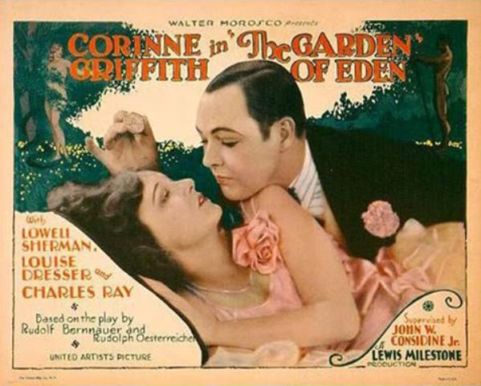

Introducción a la Historia del Cine
El cine es una forma de arte y entretenimiento que ha cautivado a audiencias de todo el mundo durante más de un siglo. Desde sus humildes comienzos como una curiosidad técnica hasta convertirse en una industria global, el cine ha experimentado una evolución increíble a lo largo del tiempo.
La historia del cine está llena de innovación, creatividad y momentos emblemáticos que han definido cada época. Desde las primeras proyecciones de películas de los hermanos Lumière hasta los espectaculares efectos visuales de las películas modernas, el cine ha evolucionado constantemente para adaptarse a las necesidades y deseos cambiantes de la audiencia.
Esta página te llevará a un viaje a través de algunos de los hitos más importantes en la historia del cine, desde la primera proyección pública hasta la llegada del sonido y el color, explorando cómo estas innovaciones han dado forma al medio que conocemos y amamos hoy en día.
Primera Proyección Pública de Cine
El cine tal como lo conocemos comenzó el 28 de diciembre de 1895, cuando los hermanos Lumière:

Realizaron la primera proyección pública de cine en París. La proyección incluía breves clips de películas como "Salida de los obreros de la fábrica Lumière" y "La llegada de un tren a la estación". Este evento marcó el nacimiento oficial del cine y el comienzo de una nueva era en la historia del entretenimiento.
divPrimera Película Sonora
En 1927, se estrenó "El Cantante de Jazz", considerada la primera película sonora de la historia. Esta película marcó un hito importante en la industria cinematográfica al incorporar sonido sincronizado con la imagen. "El Cantante de Jazz" revolucionó la forma en que se hacían y se experimentaban las películas, abriendo nuevas posibilidades creativas para los cineastas.
Primera Película en Color
La primera película en color conocida es "El jardín del Edén", estrenada en 1916. Esta película utilizó el proceso de coloración a mano para agregar color a cada fotograma, lo que requería un trabajo meticuloso y laborioso. Aunque el proceso era tedioso, "El jardín del Edén" sentó las bases para el desarrollo futuro de la tecnología de color en el cine.
